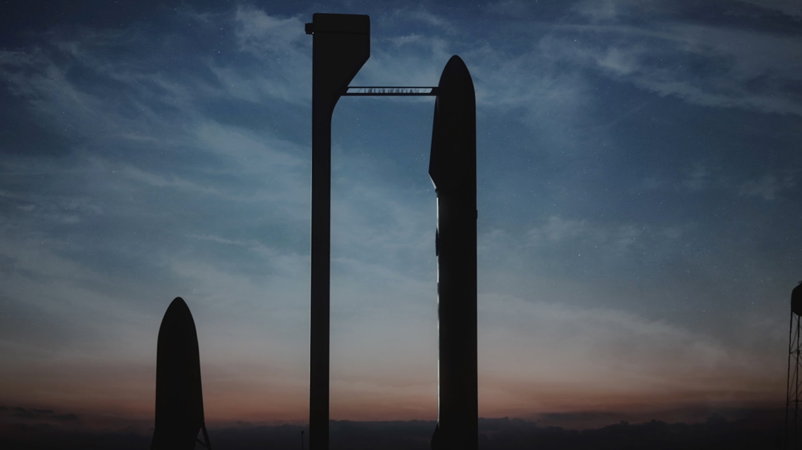

According to their website,SpaceX designs, manufactures, and launches advanced rockets and spacecraft.
The company was founded in 2002 to revolutionize space technology, with the
ultimate goal of enabling people to live on other planets.
- From the SpaceX about page
SpaceX was founded by PayPal entrepreneur and founder of Tesla motors Elon Musk in 2002, and has since shown increasing activity in contruction and launching of their spacecraft.
So far they currently have three vehicles:
SpaceX have also produced many impressive achievements since their start, including:
| Year | 2006 | 2007 | 2008 | 2009 | 2010 | 2011 | 2012 | 2013 | 2014 | 2015 | 2016 |
|---|---|---|---|---|---|---|---|---|---|---|---|
| Launches | 1 | 1 | 2 | 1 | 2 | 0 | 2 | 3 | 6 | 6 | 7 |
SpaceX is currently working on meeting one of their primary goals: making life interplanetary. Specifically, they plan on sending people to colonize Mars. They are working on what they are calling an Interplanetary Transport Sysytem. This system is projected to be able to carry roughly 450 tons of cargo to Mars, with the rocket detaching and returning to Earth for reuse. SpaceX is planning to launch the first uncrewed system in 2018.

An artist's rendition of the Interplanetary Transport System